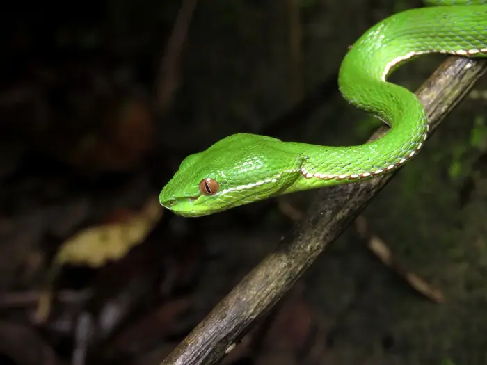
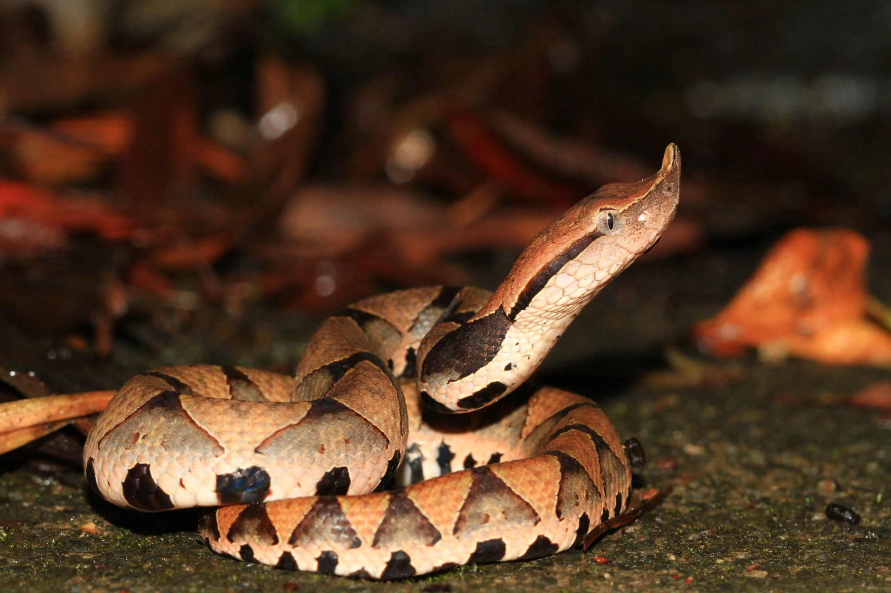

台灣六大毒蛇
- 第一種 雨傘節
 |
- 學名:
Bungarus multicinctus
- 棲息地:
棲息地以闊葉林、混生林、草原、墾地、溪流、湖沼、溝渠、海岸為主，偏好於潮濕的環境活動。在台灣主要分布於全島、金門、馬祖海拔500公尺以下地區。
- 特徵:
全長最大可達190公分，全身由黑白相間之環紋構成，背部中央之黑色環紋寬度明顯較白色環紋寬。
毒性:
資料來源:
雪霸國家公園官網
第二種 眼鏡蛇
 |
- 學名:
Naja atra
- 棲息地:
眼鏡蛇棲息於山區或農墾地，除天氣悶熱時改為黃昏活動外，一般而言為白天活動的蛇類。
- 特徵:
眼鏡蛇是一種大型的蛇類，最大全長可達2公尺，體背主要為黑色，其上有一些細的灰白色環紋，尤其以頸部的紋較寬而明顯。
眼鏡蛇易受激怒而將前身昂起，頸部並擴張成前後扁平狀，此時頸背部的白色環紋更為明顯，常呈眼鏡狀，故有眼鏡蛇之稱。
- 毒性:
資料來源:
臺灣蛇類快速辨別圖鑑-眼鏡蛇
第三種 龜殼花
 |
- 學名:
Protobothrops mucrosquamatus
- 棲息地:
龜殼花主要棲息於山區或開墾地附近，常在廢棄的房舍或農舍活動。
在台灣的龜殼花廣泛分布於全島及龜山島1500公尺以下之中低海拔地區。
- 特徵:
龜殼花是一種中型的蛇類，最大全長可達150公分，頭呈銳三角形，眼後有一細長的黑褐色縱帶。
頭頂褐色且常有斑紋分布，身體黃棕色，其上有大型黑色斑塊，斑塊邊緣有黃色細紋。
龜殼花體背中央的斑塊常連成波浪狀，有明顯保護色作用。
- 毒性:
資料來源:
臺灣蛇類快速辨別圖鑑-龜殼花
第四種 赤尾青竹絲
|
- 學名:
Trimeresurus stejnegeri stejnegeri
- 棲息地:
赤尾青竹絲主要棲息於山區或開墾地附近，喜好在稍微潮濕的環境。
在台灣主要分布於全島和蘭嶼平地至2000公尺左右之中低海拔地區，數量相當普遍，分布很廣。
- 特徵:
赤尾青竹絲是一種小型的蛇類，最大全長可達90公分，其頭呈三角形，眼睛紅色，全身翠綠。
因為尾巴後段磚紅色，故民間多以焦尾巴稱呼赤尾青竹絲。
多數的雌蛇在身體和腹部交接處有一條白色的細縱線，而多數的雄蛇除了有此白色的細縱線外，在白線下還緊接著一條紅色的細縱線。
- 毒性:
資料來源:
臺灣蛇類快速辨別圖鑑-赤尾青竹絲
第五種 鎖鏈蛇
 |
- 學名:
Daboia siamensis
- 棲息地:
鎖蛇主要棲息於山區或開墾地及河床礫灘地。
在台灣主要分布於本島東部和南部1000公尺以下中低海拔地區，通常棲息於果樹林、旱田、乾枯河床
- 特徵:
鎖蛇是一種中型的蛇類，最大全長可達165公分，體型粗短，頭部呈三角形，頭和身體有許多橢圓形斑紋，故稱圓斑蝰。
而且體背中央的橢圓形斑紋常前後相連，如鎖鍊般，故又稱鎖鍊蛇。
- 毒性:
資料來源:
臺灣蛇類快速辨別圖鑑-鎖鏈蛇
第六種 百步蛇
 |
- 學名:
Deinagkistrodon acutus
- 棲息地:
百步蛇主要棲息於山區林木底層，其花紋和落葉堆配合的很好，不易被發現。
在台灣主要分布於本島2000公尺以下中低海拔地區，因為被過度捕捉而導致數量急驟減少，目前已不易見到。
- 歷史:
- 特徵:
百步蛇是一種中型的蛇類，最大全長可達150公分，其體型粗胖，以吻端上翹，頭部明顯呈三角形著稱。
身體主要為黃褐色的百步蛇，體側有許多三角形的黑色斑紋，很容易辨認。
- 毒性:
資料來源:
臺灣蛇類快速辨別圖鑑-百步蛇